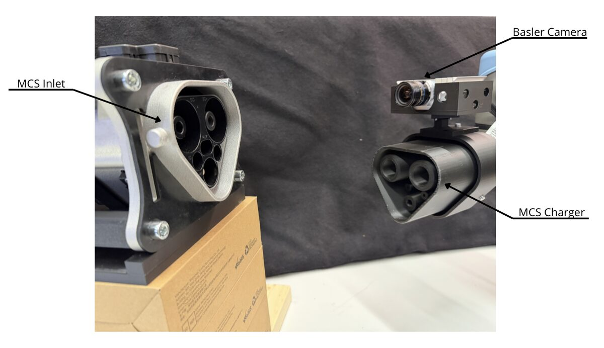

Master thesis · Grivix, Zurich10/2025 – 04/2026
Synthetic-only 6D pose estimation for robotic megawatt EV charging
Heavy electric trucks charge at megawatt power through a connector with sub-centimetre tolerances, so plugging in is a job for a robot. I built a monocular RGB pipeline that learns the inlet's 6D pose entirely from CAD-generated images, with no real training photos, and drives a UR5e arm to dock the charger.
- Photorealistic synthetic datasets in BlenderProc with domain randomization and sensor-effect injection
- YOLOv11-Pose keypoints + EPnP/RANSAC for 6D pose, closed-loop visual servoing
- Exported to ONNX and accelerated with TensorRT on a Jetson Orin AGX
- 300+ fully autonomous docking trials on real hardware
1.77 mmplanar translation error
4.5°rotation error
94%alignment success
40 msperception latency, ≈25 FPS



Full docking trial or the live keypoint overlay from the camera.
assets/video/thesis-docking.mp4